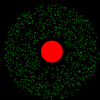

Karol Leszczyński
Hello!
This site contains my projects:
2016
RPi Vibration Measurement
Zynq FPGA - Median Filter
Barometer - STM32
2015
Ultrasonic Anemometer
Obstacle Avoiding Robot - RoboCORE
2013
 2D Nbody Gravity Simulator
 RPi Vibration Measurement
RPi Vibration Measurement Zynq FPGA - Median Filter
Zynq FPGA - Median Filter Barometer - STM32
Barometer - STM32 Ultrasonic Anemometer
Ultrasonic Anemometer Obstacle Avoiding Robot - RoboCORE
Obstacle Avoiding Robot - RoboCORE